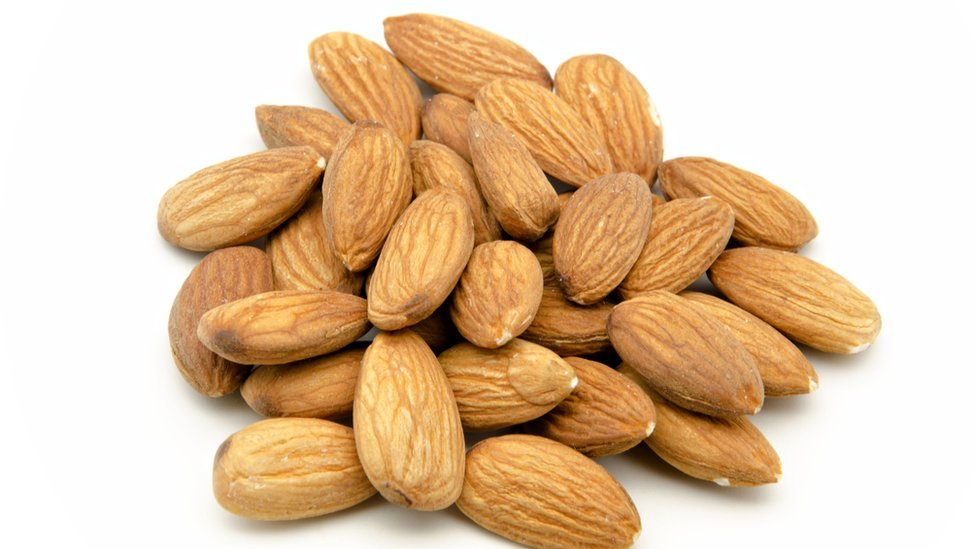

Almendras
Las almendras son reconocidas como uno de los frutos secos más nutritivos y además de tener un delicioso sabor son muy beneficiosas para la salud, ya que ayudan a prevenir muchas enfermedades.Las almendras ayudan a fortalecer los huesos, permiten que la piel y el cabello se vean saludables e hidratados.
Agregar al carrito